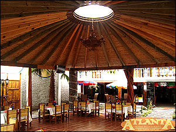

Contamos con algunos restaurantes y fondas con comida rapida y platillos deliciosos los cuales pedes encontrar en el centro de izucar de matamoros y demas instalaciones.
Si quieres saver mas sobre algunos otros restaurantes entra a este link y encontraras los que mas te agraden...
En este restaurante vas a encontrar unos ricos y deliciosos platillos los cuales te encantaran y hasta vas a querer volver a probarlos. Se encuentra en la calle Miguel Hidalgo #201 En el centro o puedes pedir tu pedido al numero: 01-243-436-0658.
Para mas informacion puedes entrar a este link...
En este local vas a encontrar unos ricos y deliciosos tacos al pastor y otros platillos los cuales te encantaran y hasta vas a querer volver a probarlos. Se encuentra en la carretera Federal Mexico Oaxaca km 160 74400 Izucar de Matamoros pue. Puedes pedir tu pedido al numero: 01-243-436-0976.

Para mas informacion puedes entrar a este link...